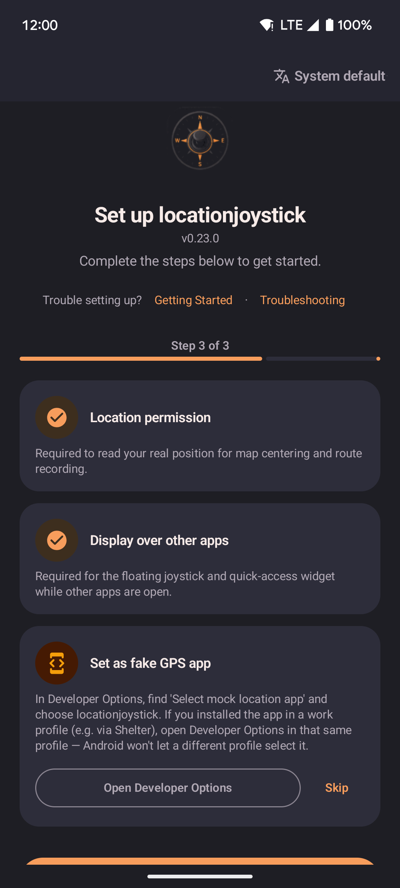

Troubleshooting
Common setup problems and how to fix them.

- The setup screen walks you through granting each permission locationjoystick needs.
- If the "Set as fake GPS app" check won't pass even though spoofing works, use the Skip option next to it — see "Mock location not detected" below.
- The Troubleshooting link at the top of this screen brings you back to this page at any point during setup.
A game shows a location or GPS error and won't let you play
Some GPS-based games actively detect apps like locationjoystick and block play when they find one, showing their own red location or GPS error on screen. This is not a problem with locationjoystick — it's a restriction built into that specific game.
These games only allow a spoofing app to work if your phone has been modified at a deeper level than locationjoystick touches: gaining "root" access (full administrator control over the phone) and applying a technique the modding community calls a Smali Patcher or LSPosed setup. locationjoystick doesn't perform this modification and doesn't need it for anything it does on its own — it's a separate, more advanced step some players take specifically to satisfy that one game's checks.
If you don't play a game like this, you can ignore this section entirely — everything else in locationjoystick works normally without root. If you do, and want to learn more about the root and Smali Patcher/LSPosed approach, see this community thread for more context. Modifying your phone this way carries its own risks and is outside the scope of locationjoystick's support.
"Failed to detect location (12)" or "location error 12"
This message comes from the game itself, not from locationjoystick. It means the game checked your phone's reported location, found the marker every mock location app leaves on it, and refused to continue.
This is the same restriction described in "A game shows a location or GPS error and won't let you play" above — see that section for what it takes to get past a game this strict. locationjoystick doesn't include a way to hide that marker on its own, and has no plans to add one. Getting past this specific check depends entirely on the root and modding approach described above, not on anything inside this app.
Allow restricted settings (Android 12+ installed from a file)
On Android 12 and later, apps installed directly from a file (like the download from GitHub) are blocked from using certain settings, including the overlay permission, until you allow them by hand. This step is not needed if you installed from the Play Store.
To allow restricted settings:
- Open the Settings app on your phone.
- Go to Apps (sometimes called "Application Manager").
- Scroll down and tap locationjoystick.
- Tap the ⋮ (three-dot menu) in the top-right corner of the app info screen.
- Tap Allow restricted settings.
- Return to locationjoystick and go through setup again.
If you don't see the three-dot menu, your phone or Android version probably doesn't need this step. Skip it and keep going with setup as normal.
App missing from the "Select mock location app" list
Open the app at least once before checking the list. A freshly installed app won't show up until it's been launched. After that, turn Developer Options off and back on, or restart your phone, so the list refreshes.
On some phones (MIUI, ColorOS, and other custom Android versions), newly installed apps stay hidden from this list until you grant the "Allow restricted settings" permission above, or until after a restart. If the app still won't show up, try reinstalling it, then restart once more before checking again.
Mock location not detected
Some phones need a restart after you change the Developer Options setting. Try restarting, then tap Check again.
If the check still fails and you're sure spoofing works anyway (this can happen with some modified mock-location apps), tap Skip next to the check during setup, then confirm on the warning dialog. Only use this if you've already confirmed spoofing is working.
Overlay permission resets on restart
This is a known issue on some custom Android versions (MIUI, ColorOS). Grant the permission again after each restart, or check your phone's autostart settings.
Another app holds the mock location slot
Only one app can act as the mock location provider at a time. Make sure no other mock location app is selected in Developer Options.
Spoofed location jumps back to your real location
This happens when another part of your phone keeps refreshing its own idea of where you really are, and that refreshed position briefly overrides the spoofed one. Turning on "Location Accuracy" is the most common trigger, but a few other settings can cause the same jump — sometimes right back to the spoof a moment later, which looks like teleporting back and forth. locationjoystick has no control over any of these phone-level settings; fixing this means changing them yourself. The steps below are all reversible.
Go through these one at a time and test after each — you may not need all of them:
- Open Settings → Apps, find Google Play Services, open Storage, and tap Clear cache. Then open the ⋮ (three-dot) menu on the app info screen and tap Uninstall updates. This resets it to the version that came with your phone, which stops it from quietly re-checking your real position as often.
- While still on the Google Play Services app info screen, open Permissions → Location and set it to Don't allow.
- Open Settings → Location and change the location mode to GPS only (sometimes called Device only) instead of High accuracy. High accuracy mode blends in Wi-Fi and network signals, which is what pulls the reported position back toward your real one.
- In that same Location menu, look for Wi-Fi scanning and Bluetooth scanning (often under an "Improve Accuracy" heading) and turn both off.
- Turn off Location History, Location Sharing, and Find My Device in your Google account settings. Each of these periodically records your real position in the background, independent of whichever app is asking for it.
- Make sure no other app is also set as a mock location app in Developer Options — see "Another app holds the mock location slot" above.
To get your real location back later (for example, to use another app normally): stop spoofing in locationjoystick, then reverse the settings above that you changed — in particular, switch the location mode back to High accuracy. Restart the app you want to use afterward, so it picks up your real position instead of a cached spoofed one.